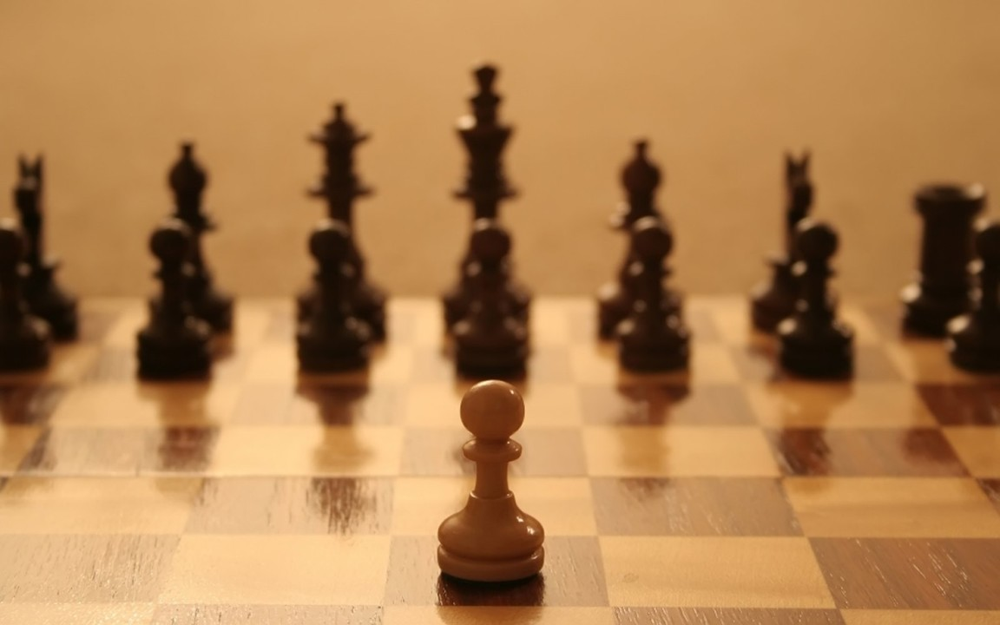

Porque o peão tem uma esfera em cima dele?

Esta esfera em cima do peão é um detalhe muito interessante escondido no xadrez, ele tem esta esfera que significa a capacidade dele dentro da sociedade, o xadrez é um jogo baseado em uma sociedade como podemos ver, o peão ele pode virar uma rainha , um bispo, um cavalo exceto um rei. a rainha e o bispo tem uma pequena esfera pois eles não precisaram de muito para chegarem aonde estão , a torre e o cavalo ja nasceram daquela forma por isso não tem nenhuma esfera, o rei tambem não tem nenhuma pois ele ja nasceu fadado a ser um rei, agora o peão ele pode ser tudo aquilo que é possivel conquistar como a rainha , bispo, torre e cavalo, exceto o rei pois você só vira rei se for filho de um. o peão se unir com os outros não existe rainha , rei , torre ou cavalo que pare eles